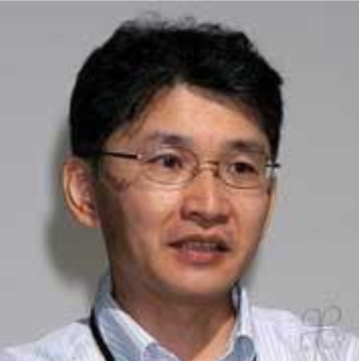

貝沼亮介
東北大学大学院教授

貝沼亮介
東北大学大学院教授
東北大学YMCA渓水寮は日本YMCA同盟（YMCAの日本支部）の一部門である学生YMCAに属している寮です。YMCA(キリスト教青年会)は世界120の国と地域で、およそ6500万人の会員を有するNGO(非営利組織)です。
YMCAはキリスト教精神を基盤としている団体ではありますが、布教を目的とした活動は行っておらず、日本各地で水泳・サッカーなどのスポーツクラブや幼稚園・保育園の運営、国際交流プログラムやボランティア活動の企画といった社会教育事業を展開しています。
東北大学YMCA渓水寮でも寮生の多数はノンクリスチャンで、勧誘などはありません。
学生YMCA→東北帝国大学基督教青年会は1928(昭和3)年に発足し、会館(寮)はそsの8年後の１９３６（昭和11年）に当時法文学部長であった石原謙先生が同大学に通うクリスチャンやキリスト教に関心を持つ学生のために資材を投じて建てられました。
しかるに会館は戦後米軍に接収され、返還されたのは１９２５（昭和２７）年4月でした。改修を経て1953年6月21日再建献堂記念礼拝と講演会が行われました。その後建物の老朽化が進んだため、１９８９（平成元）年、現在地に新築、移転しました。
１９９７（平成９）年からは男子・女子ともに生活することとなりました。（畠山先生の会報から丸コピしてちょっと省きました、確認おねがいします）